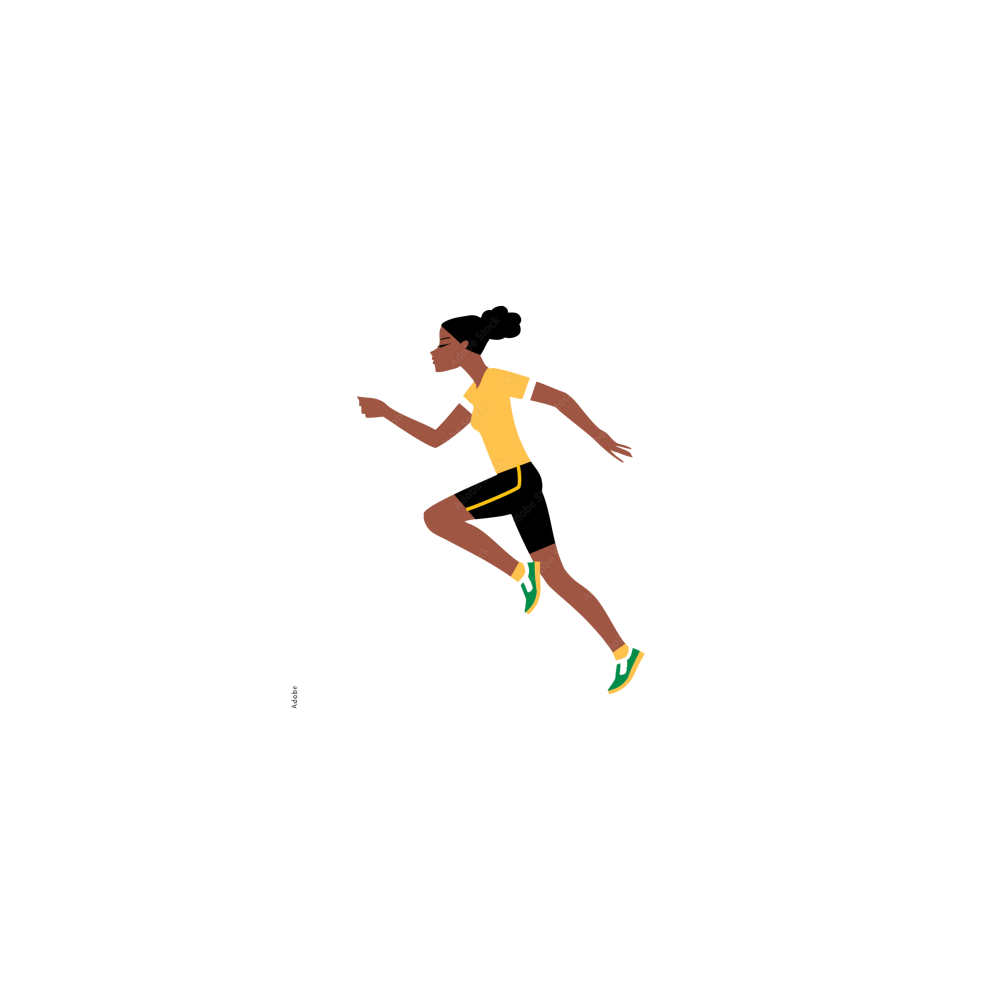

I’m a 17-year-old woman living in Tulsa, Oklahoma with my African mother and white father. I was born into a wealthy family, having the last name Chase from my father. My mother works as an attorney, carrying her grandfather's legacy as he was one of the greatest attorneys in Tulsa. In addition, my father works and manages an oil company stationed in Tulsa. We all live in a house together that we inherited from our ancestors. The house travels back all the way to 1921 when the Tulsa Race Riot first started. The history of inequality covered up by the government really frustrates me as I know what truly happened. With my knowledge of racial segregation in the past, I really want the world to know what has happened in Tulsa. I’m currently working as an assistant nurse for a clinic in Greenwood. Spending time with people of my race really sparks a sense of joy in me, myself a wealthy black woman. During my free time, I spend a lot of time with my best friend James. We spend lots of time going out to concerts, solving mysteries, or just hanging out. And whenever I feel like it, I decide to jog around the block every day in the early morning, for as many as 2-3 hours. “I always train hard,” (Latham 82), running every day to keep my mind clear and my body in shape. Some other hobbies I have include: scrolling through social media, researching historic events, and staying at home watching T.V.
I have to admit, sometimes I’m emotional. For example, during my conflict with James, “I didn’t shed a tear” (Latham 73) until I was alone in my car and James couldn’t see me. Then I wept. Other people also describe me as mischievous and secretive. After I found the skeletonized body behind my family’s mansion, I quickly scavenged around the area, searching for anything that could help me figure out why it was there. When I found something, I made sure that I didn't tell anyone to make sure I stayed out of trouble. My mother also describes me as lazy. I typically spend my time sulking in my bed, thinking about life instead of living it. Lounging around and looking at my phone sums up what I do mostly everyday. Lastly, I’m very big on racial inequality. Whenever I see how people of a darker shade of skin color are treated as inferior, I often feel disgusted.